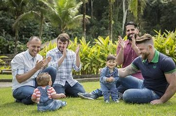
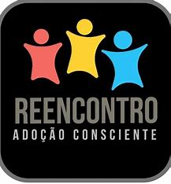

Os Grupos de Apoio à Adoção (GAAs) são organizações formadas por pais adotivos, profissionais especializados e pessoas interessadas no tema da adoção. Esses grupos têm como objetivo principal oferecer suporte emocional, social e informativo às famílias adotivas e incentivar a conscientização sobre a importância da adoção legal e responsável.
Benefícios dos Grupos de Apoio Os grupos de apoio desempenham um papel essencial em todas as fases da adoção. Entre os principais benefícios estão:
Compartilhamento de ExperiênciasReuniões periódicas permitem que pais adotivos compartilhem histórias, desafios e sucessos, criando um ambiente de empatia e acolhimento. O contato com outras famílias que vivenciaram situações semelhantes ajuda os adotantes a se sentirem compreendidos e apoiados.
Orientação e InformaçãoOs grupos fornecem informações sobre as etapas do processo de adoção, os direitos e deveres dos adotantes e as necessidades específicas das crianças e adolescentes adotados. Especialistas convidados, como psicólogos, assistentes sociais e advogados, frequentemente participam das reuniões para esclarecer dúvidas e oferecer suporte técnico.
 Apoio Pós-AdoçãoAs famílias encontram nos grupos um espaço seguro para discutir questões relacionadas à adaptação, convivência e desafios emocionais após a adoção. São compartilhadas estratégias e práticas eficazes para lidar com situações como rejeição inicial, adaptação escolar e fortalecimento de vínculos familiares.
Promoção da Adoção ConscienteOs GAAs realizam campanhas e eventos para conscientizar a sociedade sobre a adoção, combatendo preconceitos e incentivando a adoção de crianças mais velhas, grupos de irmãos ou com necessidades especiais.
Os Grupos de Apoio à Adoção estão presentes em diversas cidades do Brasil e são abertos a qualquer pessoa interessada, incluindo:
Candidatos à adoção
Pais adotivos.
Pessoas que desejam saber mais sobre o tema.
Voluntários interessados em ajudar na causa.
Para encontrar um grupo na sua região, entre em contato com o Juizado da Infância e da Juventude ou procure por GAAs em redes sociais e sites especializados.
Encontros Presenciais ou Online: Trocas de experiências e debates sobre temas relevantes. Workshops e Palestras: Orientações com profissionais especializados. Eventos de Conscientização: Feiras, campanhas educativas e debates públicos. Atividades para Crianças e Adolescentes: Integração das famílias adotivas e fortalecimento de vínculos.
Rede Nacional dos Grupos de Apoio à Adoção (RENAGAA)A RENAGAA é uma rede que reúne diversos GAAs do Brasil, promovendo o intercâmbio de informações e boas práticas entre grupos. Através dela, é possível localizar e entrar em contato com o grupo mais próximo.